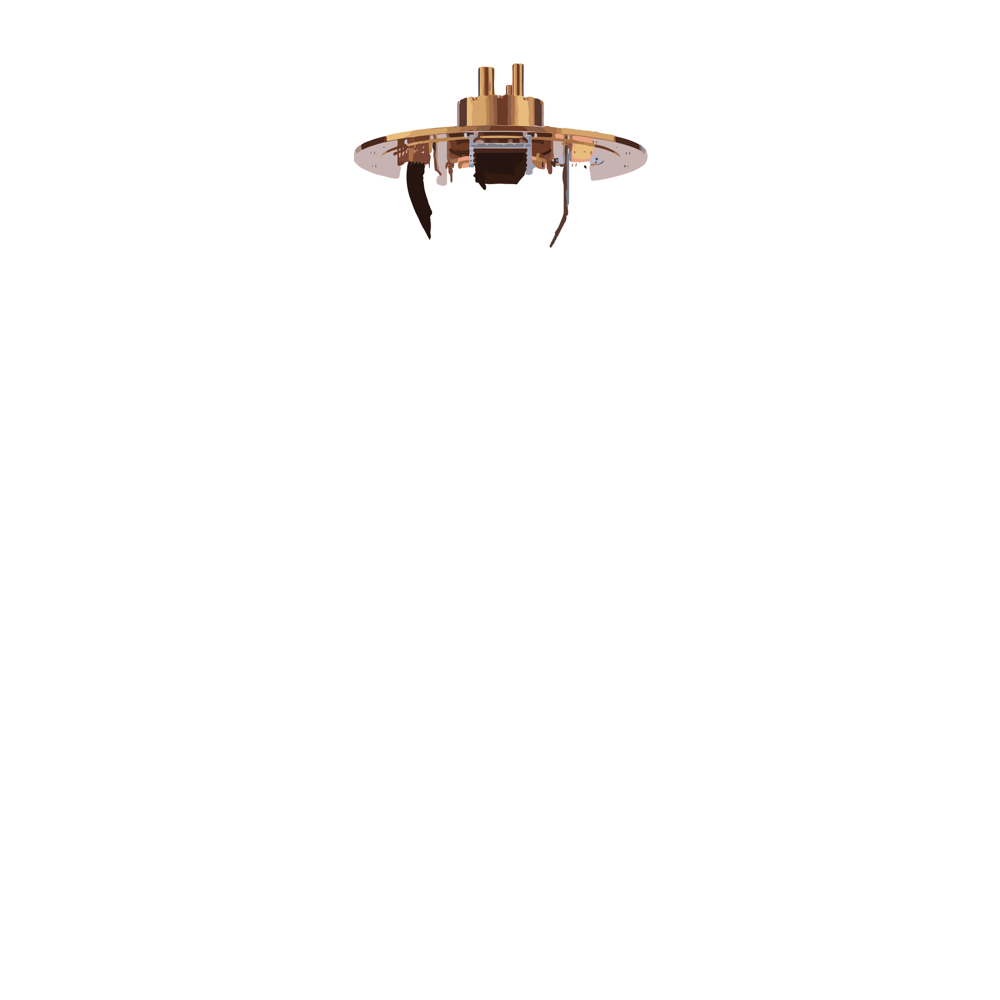
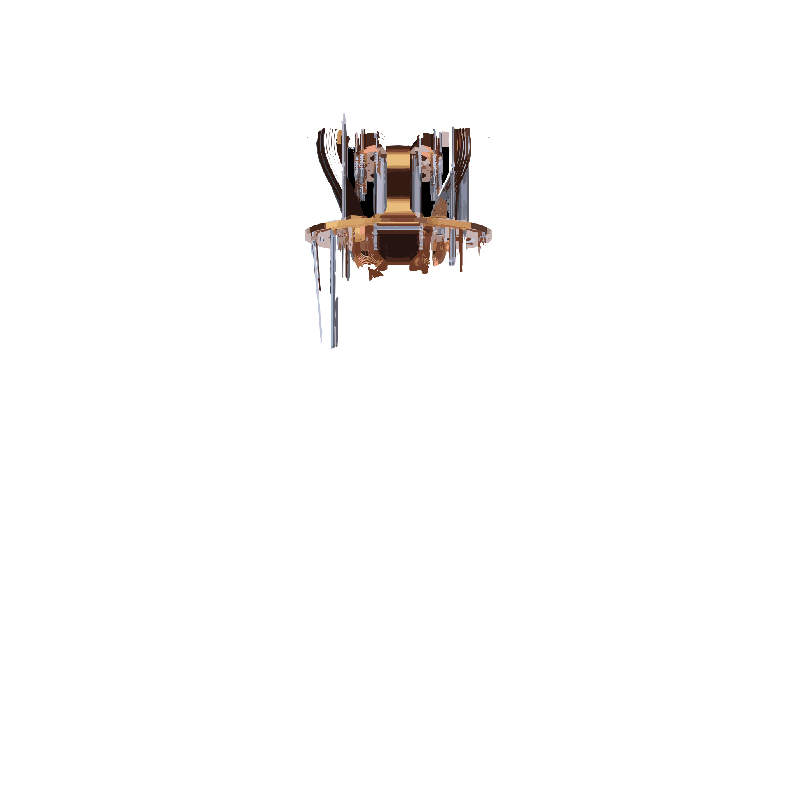
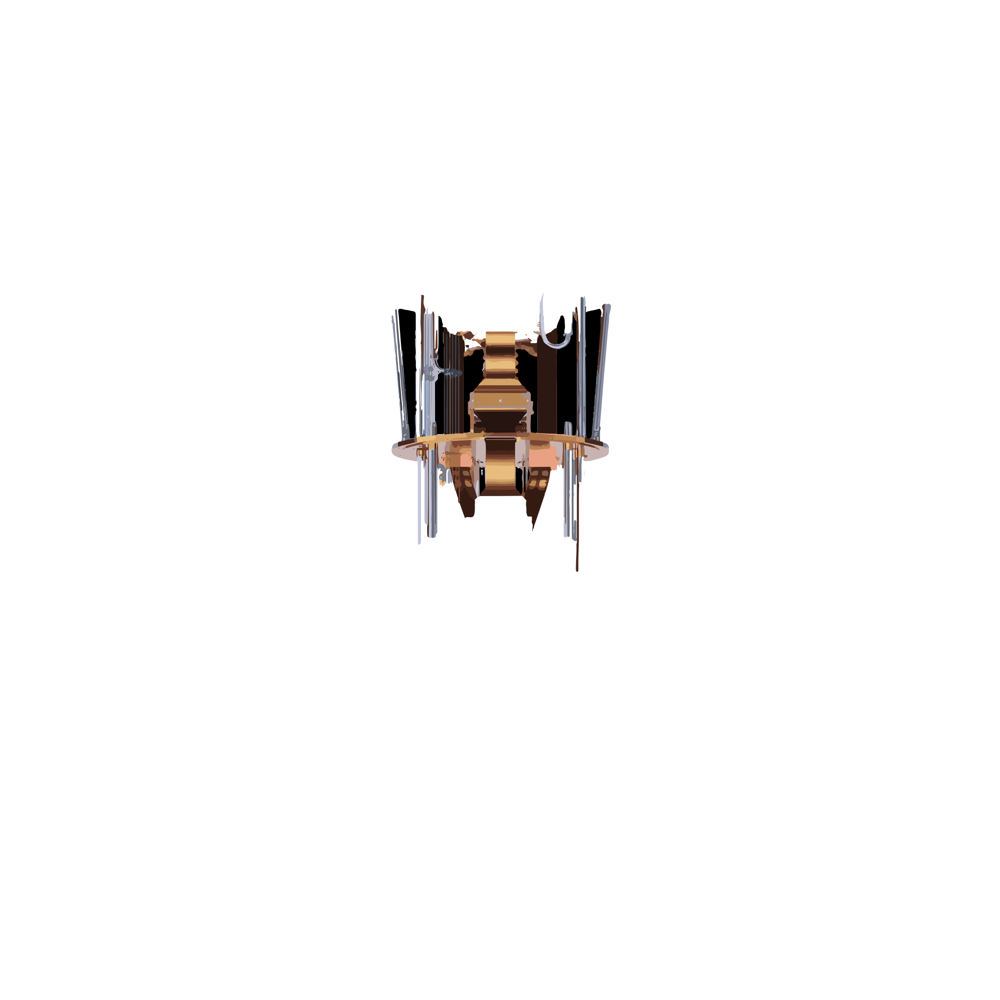
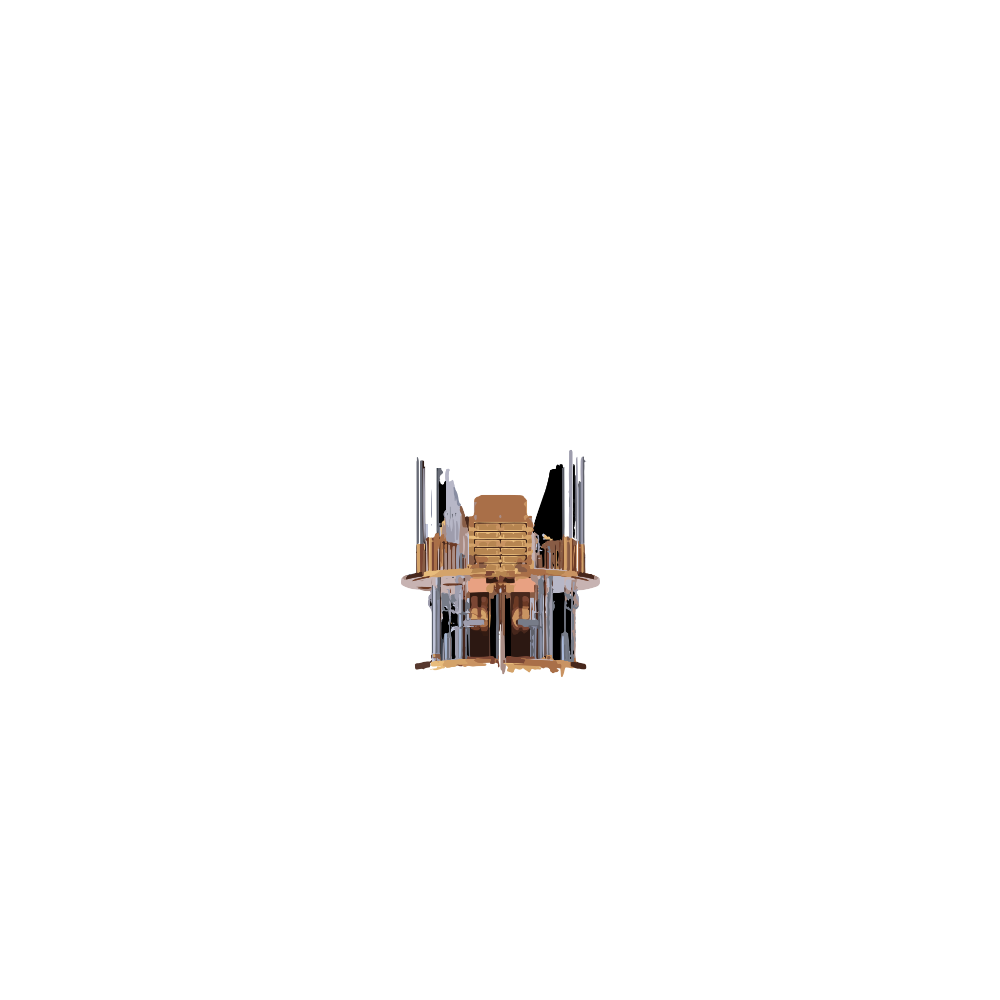
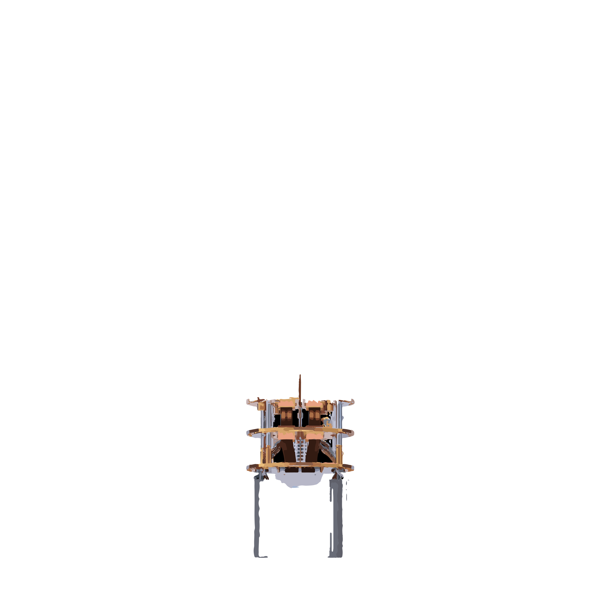
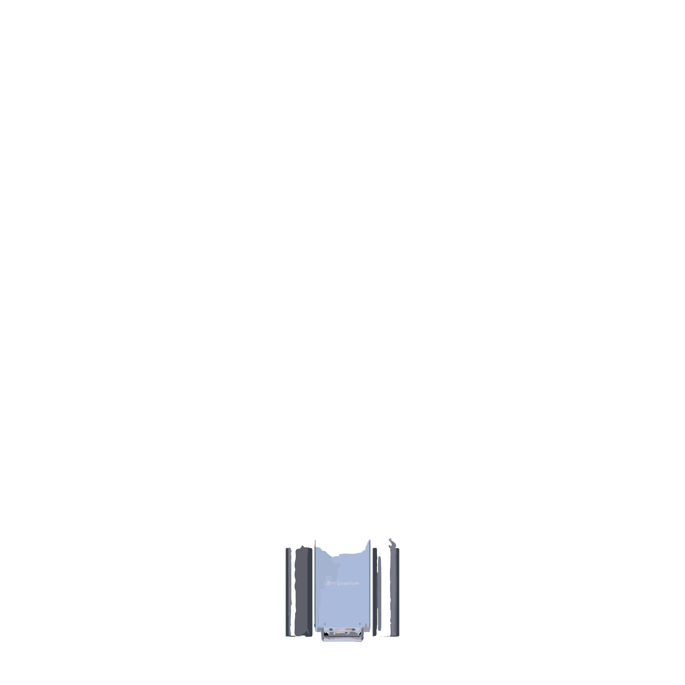

IBM Quantum · Dilution Refrigerator15 mK · 6 thermal stages · hover to separate






Select Quantum Processor
28 backends · Superconducting · Trapped Ion · Photonic · Neutral Atom · Annealing
CREDITS10:00min remaining
IBM Open Plan · Free Tier
♦ Workpad▼
JOB TRACKER
COMPUTE TOPOLOGY
Quantum Geographic Codex
28 QPUs · 6 modalities · drag to rotate · scroll to zoom
CLICK A QUBIT FOR CALIBRATION DATA
GATES
BLOCH
MAGNETIZATION
RSI: --
MACD: --
Click on the grid to place gates · drag from palette · arrows to navigate
Measurement Histogram
Gate Distribution
Per-Qubit Error
Signal Data Flow
Waveform (top) Each gate in your circuit generates a Morse-encoded signal. H→high freq (220Hz), CZ→low pulse (110Hz). The wave decays over ~2s. Switch styles with the ♫ modifier.
Frequency Spectrum (mid) Summed power of all active waveforms scrolling left. Height = combined amplitude of gate signals still ringing.
Noise Floor (dashed) Real CZ gate error rate from ibm_marrakesh calibration (2.4×10⁻³). Individual CZ error markers shown as dots.
Data Flow Pipeline (mid) 7-stage signal path from QPU to classical readout: • QPU Chip → Cryostat → Control μW → Amplifier → Digitizer → Discriminator → Classical Gold particles flow left-to-right showing data in transit. Each node pulses with the signal cadence. Adapts to whichever QPU you selected in Act I.
Calibration Symphony (bottom) 10 QPU voices pulsing in real time. Each bar maps real device metrics: • T1 (coherence) → bar height/sustain • Error rate → wobble/detuning • CLOPS (speed) → pulse rhythm Beams flow up into the pipeline when a QPU peaks. Per-voice T1 and error stats shown below each bar.
Morse Output (bottom text) The message "HERON R2" encodes letter-by-letter into Morse: dot = short high tone, dash = long low tone.